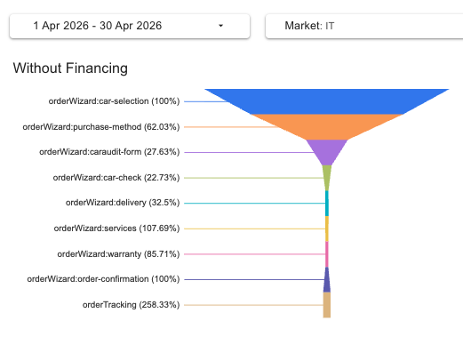
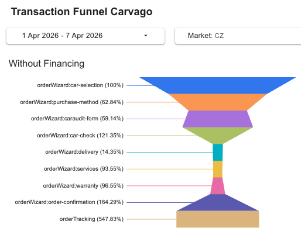
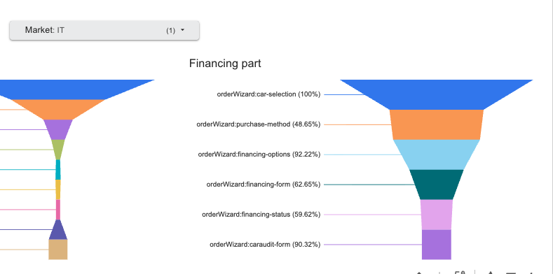
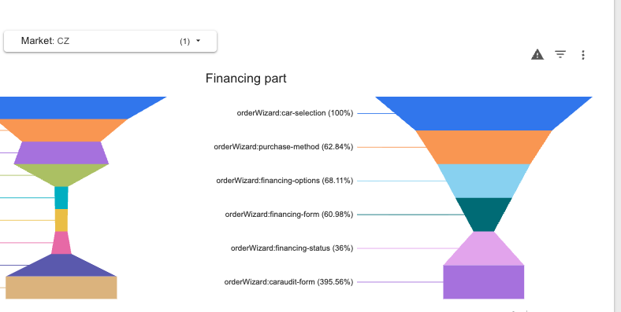
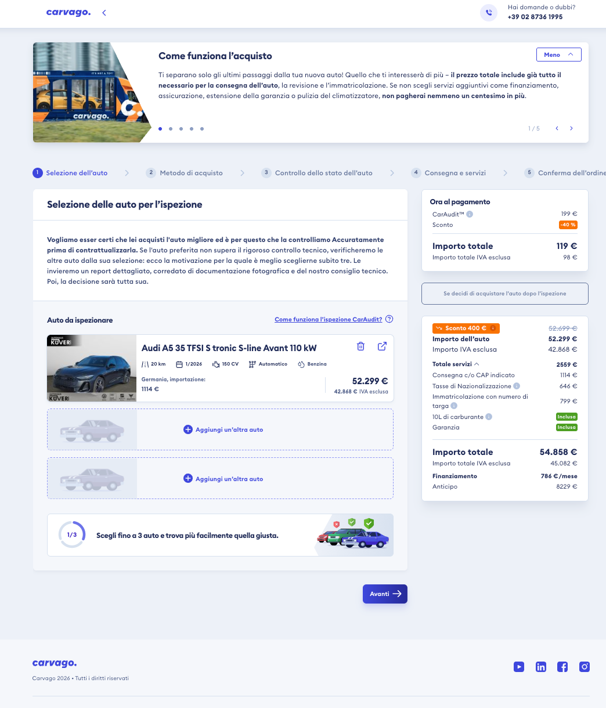
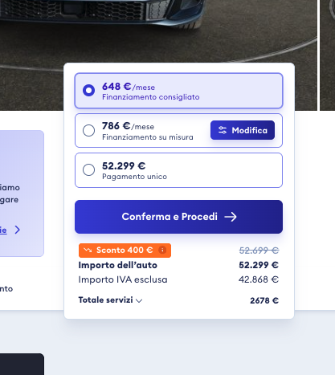
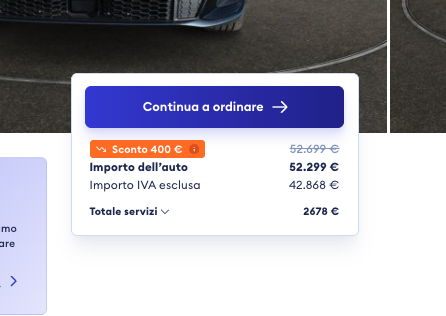
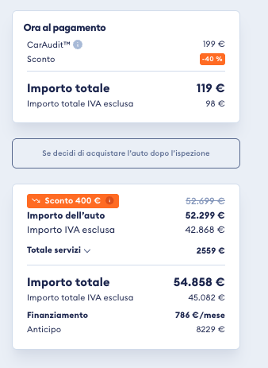

Author: Marie MichalovaDate: 8 April 2026Status: In Progress
Problem Statement
Conversion from New Opportunity to Paid CarAudit (unique per customer) in Italy has dropped from ~11–13% (mid-2025) to ~2–3% (Q1 2026).
This needs urgent investigation.
1. KPI Data: Conversion Trend
Data source: [PROD] KPI sheet, country = IT.
Conversion = Paid Unique Per Customer / New Opportunities.
Italy: Monthly Funnel
Month
New Registrations
New Opps
Paid Unique /Customer
CA Delivered /Customer
Contracts Paid
Paid/New Opp %
Trend
Apr 2026 (partial)
157
142
5
5
4
2.11%
Mar 2026
1,120
872
26
20
11
2.64%
Feb 2026
838
660
23
16
4
3.48%
Jan 2026
552
473
19
8
4
4.02%
Dec 2025
490
483
24
19
6
4.76%
Nov 2025
596
581
31
16
9
5.16%
Oct 2025
496
333
28
11
3
9.61%
Sep 2025
438
207
19
8
1
8.70%
Aug 2025
370
159
20
10
5
9.43%
Jul 2025
400
199
27
28
13
13.57%
Jun 2025
685
360
42
18
8
10.28%
May 2025
595
299
37
23
20
11.04%
Conversion dropped from ~11% to ~2% in 10 months
The decline started around Oct 2025 and has been accelerating. Meanwhile, the number of new opportunities has been growing (299 in May 2025 → 872 in Mar 2026), suggesting increasing traffic but decreasing quality or increasing friction.
Possible trigger: new transaction flow (August 2025)
Hypothesis: decision paralysis from the new multi-car flow?
In August 2025 we deployed a major change to the order wizard. Two big behavioral changes for customers:
Multi-car cart: customers can now add up to 3 cars to their cart before paying for CarAudit (previously: one car at a time)
Single active opportunity: a customer can have only one active opportunity / pay for only one CarAudit at a time (previously: multiple in parallel)
This timing aligns suspiciously well with the conversion decline (started ~Oct 2025, accelerating since). Possible mechanism:
Decision paralysis: "Should I add 3 cars or just continue with this one?" — users hesitate because they fear missing the option to compare
Commitment friction: the new "only one active opportunity" rule increases the perceived weight of each choice
Sunk-cost loops: users start adding cars but get stuck deciding whether to remove/replace
This needs investigation — it's the most plausible explanation for a drop that's correlated in time and not specific to a single funnel step. Worth testing in the upcoming Hotjar survey.
2. Lost Reason Analysis (Salesforce)
Caveat: Auto-closing of opportunities was rolled out in two phases:
July 2025: Opportunities in "New" stage without customer interaction are auto-closed after 30 days
March 2026: Opportunities in "Financing" stage without sales interaction are auto-closed after 30 days
Data before July 2025 may include manually closed opportunities with different reason codes. The "auto-closed in Financing" reason only appears from March 2026 onwards.
Lost Opportunity reason codes for Italy, Jan–Apr 2026 (1,447 lost):
Reason Code
Count
Share
Auto-closed after 30 days in "New"
1,128
78.0%
(empty / unknown)
180
12.4%
Auto-closed after 30 days in "Financing"
139
9.6%
Conclusion: The vast majority of Italian opportunities never progress beyond the initial stage.
The GA funnel confirms the drop happens between car-selection and caraudit-form — specifically at the purchase-method step, where IT users convert significantly worse than CZ. This needs deeper investigation.
3. GA Funnel: Where Users Drop Off
Data sources:
• Funnel percentages: Transaction Funnel Carvago (Looker Studio) • Engagement time & user counts: GA4 Pages and screens Reporting period: 1–30 April 2026.
Important: Funnel percentages are step-to-step (from previous step), not from top of funnel. No cohort filtering — users can revisit steps, causing >100% values.
Full Funnel (all payment methods)

Italy — Without Financing (1–30 Apr 2026)

Czech Republic — Without Financing (1–30 Apr 2026)
Step
IT (% from prev)
CZ (% from prev)
Gap (IT vs CZ)
Assessment
car-selection
100%
100%
—
Baseline
purchase-method
62.03%
64.07%
-2pp
IT now matches CZ
caraudit-form
27.63%
58.57%
-31pp
Biggest IT-specific drop
car-check
22.73%
82.97%
-60pp
Big gap downstream
delivery
32.5%
25.33%
+7pp
services
107.69%*
91.5%
—
*revisits
warranty
85.71%
100%
-14pp
order-confirmation
100%
162.14%*
—
*CZ revisits
orderTracking
258.33%*
233.04%*
—
*revisits both
First drop has improved, but second drop is still the killer
With full April data, the IT car-selection → purchase-method rate is now 62.03% — nearly identical to CZ's 64.07%. The IT-specific friction at the wizard entry has largely disappeared.
The dominant problem is now purchase-method → caraudit-form: 27.63% IT vs 58.57% CZ (-31pp gap). Only ~1 in 4 Italian users who reach the payment-method choice proceeds to the CarAudit form — less than half the CZ rate.
Note also car-check: 22.73% IT vs 82.97% CZ (-60pp) — the few IT users who pay for CarAudit don't return for the result much. This is suspicious and worth checking (it could be reporting timing, not a true behavioral gap).
Understanding the path structure
The wizard splits at purchase-method and converges back at caraudit-form:
cash ↓ ↓ financing
financing-options
↓
financing-form
↓
financing-status (approved or rejected)
↓ (both paths converge)
↓ caraudit-form(payment for inspection)
Important: If financing is approved, customer is motivated to continue to caraudit-form. If rejected, the customer can still continue (pay cash for the audit), but many likely lose interest at this point.
Financing Path (subset with additional detail)
The financing path table below shows step-to-step retention for users who chose financing. Note: at caraudit-form both paths converge, so the % from financing-status mixes financing users with cash users from the parallel path.

Italy — Financing Path (1–30 Apr 2026)

Czech Republic — Financing Path (1–30 Apr 2026)
Step
IT (% from prev)
CZ (% from prev)
Gap (IT vs CZ)
Note
car-selection
100%
100%
—
purchase-method
62.03%
64.07%
-2pp
Same as CZ
financing-options
86.19%
72.81%
+13pp
IT better
financing-form
60.47%
60.55%
≈ 0
Same
financing-status
62.35%
29.74%
+33pp
IT much better (shorter IT form)
caraudit-form
85.02%
446.63%*
—
*paths converge here
Why is CZ caraudit-form 446.63% — and why isn't IT?
At caraudit-form, both paths converge. Cash users arrive here without ever going through financing-status, so the "% from previous step" can be much higher than 100%. The high 446.63% for CZ reflects that most CZ users go via cash and reach caraudit-form directly — the financing-status group is small but caraudit-form gets users from both paths.
IT's much lower 85.02% reflects the opposite: the IT cash path is broken (only 27.63% of cash users actually reach caraudit-form), so the "cash boost" at caraudit-form is small relative to the financing group.
Financing-step retention is good in IT — but with a caveat
At every financing step, IT matches or beats CZ's step-to-step retention:
financing-options: IT 86.19% vs CZ 72.81% (+13pp)
financing-status: IT 62.35% vs CZ 29.74% (+33pp) — IT financing form is shorter, users reach the verdict screen sooner
However, this only tells us users complete the financing flow — not that financing was approved.
CONFIRMED: Italy's financing approval rate is catastrophic — 3.24% vs CZ 40.98%
Salesforce data (Financing__c, Nov 2025 – Apr 2026) shows Italy's financing pipeline is essentially non-functional. See section 3a below for full breakdown.
3a. Salesforce Financing Data: IT vs CZ
Source: Salesforce Financing__c object, Nov 2025 – Apr 2026, filtered by Customer_Country_Origin_Picklist__c, excluding test records.
Status breakdown
Status
🇮🇹 Italy
🇨🇿 Czech
fin-requested
1
5
fin-in-progress
63
3
fin-additional-documents-requested
8
33
fin-approved
11
151
fin-contract-signed
0
39
fin-final-documents-sent-to-bank
0
9
fin-completed
10
128
fin-lost
627 (87%)
471 (56%)
Total
720
839
Approval rate
Metric
🇮🇹 Italy
🇨🇿 Czech
Difference
Approval rate (approved+ ÷ approved+ + lost)
3.24%
40.98%
-37.7 pp (12× worse)
fin-completed share
1.4%
15.3%
-13.9 pp
fin-lost share
87.1%
56.1%
+31 pp
Italy approval rate is consistently low — not a short-term anomaly
Month
Approved/Completed
Lost
Approval rate
Nov 2025
3
77
3.7%
Dec 2025
2
69
2.8%
Jan 2026
3
59
4.8%
Feb 2026
3
106
2.8%
Mar 2026
5
154
3.1%
Apr 2026
5
160
3.0%
Bank pipeline comparison
Bank partner
🇮🇹 Italy
🇨🇿 Czech
Moneta
—
505
Cofidis
—
239
Leasing ČS
—
80
Essox
—
1
Agos (IT bank partner)
2
—
(no bank assigned)
718 (99.7%)
13 (1.5%)
The Italian financing pipeline is essentially non-functional
99.7% of Italian financing applications never get assigned to a bank — only 2 of 720 records are linked to Agos (the only IT bank partner)
All 720 IT records have NULL Final_Type_Of_Financing__c — they're lost before a financing type is even chosen
CZ has 4–5 active bank partners with proper pipeline distribution; only 1.5% have no bank
Possible root causes (need investigation with F&I team):
F&I team doesn't process Italian applications (capacity / language / process gap)
Integration with Agos is broken or not configured
Italian customers fail basic eligibility before submission (income, residency, etc.)
Italian process never auto-creates the bank assignment
How this connects to the conversion problem
This finding completes the picture:
Italian customer chooses financing on the wizard
Goes through financing-options → financing-form → financing-status (the GA funnel even shows IT does this better than CZ at the step level)
But financing is rejected/lost in 87% of cases — usually before any bank ever sees it
Customer would have to fall back to cash payment for CarAudit — but the prior survey shows 19% of IT users distrust online car purchases, so they drop instead
This is likely the single biggest contributor to the IT conversion drop. The August 2025 transaction change (Section 1) compounds this by making "single active opportunity" the rule — rejected customers can't keep multiple financing applications going in parallel.
Engagement time per page: IT vs CZ (1–30 April 2026)
IT users spend significantly less time at every wizard step
With full April data, the gap is now visible across nearly every step:
purchase-method: -16s (35s vs 51s)
caraudit-form: -22s (31s vs 53s)
financing-status: -40s (26s vs 1m 06s) — biggest gap
Italian users are not engaging deeply with any step. The exception is car-check (+1m 04s) where the few who get there spend a lot of time — suggesting a small but very engaged segment.
The critical drop-off point (with refreshed data):purchase-method → caraudit-form: 27.63% IT vs ~59% CZ — only ~1 in 4 IT users who reach the payment-method choice proceeds to the CarAudit form. This is now the dominant friction point.
4. UX Review: The Car-Selection Page

The car-selection page (step 1) — this is where 51% of IT users drop off
User flow before the wizard
The user sees a price payslip on the car detail page before entering the wizard.
They can already choose a financing option or cash on the car detail page, then click "Conferma e Procedi" to enter the wizard. Once the car is in the cart, the button changes to "Continua a ordinare".

Car detail — first visit, with financing options

Car detail — car already in cart, "Continua a ordinare"

Cart sidebar (step 1) — current expanded payslip
Key observations
Price is already visible before the wizard — "sticker shock" at step 1 is unlikely
CZ has similar fees — IT-specific taxes are not unique friction
5-step wizard may feel like a commitment for exploratory users
Explanatory text at top is dense
Cross-border origin ("Germania, importazione") visible on most IT cars
Data gap
Cash vs financing split is not currently tracked in Salesforce. Implementation is in progress.
Note: the GA "Full Funnel" view includes both cash and financing users. The 31.11% purchase-method → caraudit-form rate is across all payment methods. Once the SF split is available, we can determine if one path is significantly worse.
5. Prior Survey Data: "Why Not Carvago"
A previous Hotjar survey ran across all Carvago markets (6,082 responses total: 4,137 Proposition survey + 1,945 "Why not Carvago"). Duration: 2 weeks, all countries, mobile & desktop.
Full results (Google Slides) →
"Why not Carvago" — Italy vs other markets
The "Why not Carvago" survey asked: "If you haven't decided to buy a car through Carvago yet, what's the main reason?" (multi-select). Italy-specific findings:
Barrier
IT
AVG
IT vs others
Car price too high
~39%
42%
Close to average
No trust in online car purchase
~19%
13.5%
IT is HIGHEST
Don't understand how purchase works
~15%
8%
IT nearly 2x average
Looking for other financing
~10%
10.9%
Average
Insufficient info in listings
~7%
9%
Below average
Long delivery time
~8%
5.2%
Slightly above
CarAudit price
~5%
3.7%
Not a major barrier
Don't trust Carvago brand
~2%
3.8%
Below average
Italy's #1 unique barrier: distrust of online car purchasing (19% — highest of all markets)
Combined with "don't understand how purchase works" (15%), 34% of Italian non-buyers cite trust or process confusion as their reason. This is significantly above the cross-market average.
Notably, they don't distrust Carvago specifically (only 2%) — they distrust buying a car online in general.
Proposition survey — Italy awareness gaps
The Proposition survey tested if users know about key Carvago benefits (Yes/No). Italy scores well overall, but two areas stand out:
Statement
IT "Yes"
AVG
Gap
I know I can buy a car fully online
~85%
85.5%
OK
I know Carvago checks every car before purchase
~86%
85.9%
OK
I know I can return the car within 14 days
~78%
79%
OK
I know each car comes with free warranty
~75%
74.6%
OK
Online purchase on Carvago is the safest way to buy
I buy directly from Carvago and they guarantee the car
~70%
80.9%
-11pp below avg
Italian users don't believe Carvago is the safest way to buy a car (57% vs 65% avg), and fewer understand they buy directly from Carvago with a guarantee (70% vs 81% avg). This reinforces the trust hypothesis.
What this means for our new survey
The prior survey already answered some of our questions at a general level. Our new Hotjar survey should go deeper and more specific to the wizard context:
We already know trust & process confusion are the top IT barriers — no need to re-validate this broadly
We need to learn what specifically about the wizard/cart triggers distrust or confusion
We need to distinguish "just browsing" (traffic quality) from "interested but blocked" (UX/trust issue)
CarAudit price is NOT a major barrier (only 5%) — we can safely exclude it from survey options
6. Hypotheses
Combining the GA funnel, KPI data, SF lost reasons, and prior survey results:
#
Hypothesis
Evidence
How to test
H1
"Just browsing" — low purchase intent IT traffic has many window shoppers who enter the wizard to explore
78% auto-close in "New"; 51% drop at step 1; growing opp volume but declining conversion
Hotjar Survey
H2
Trust gap — cross-border purchase anxiety Italian users don't trust buying a car from Germany through an online platform
Most IT cars are imported; Italian market is newer for Carvago
Hotjar Survey
H3
Process unclear — "what happens next?" Users don't understand the wizard steps or the CarAudit concept
Drop at step 1 before any action is required
Hotjar Survey
H4
Commitment shock — wizard feels too heavy 5-step wizard creates a "serious purchase" feeling that doesn't match exploratory mindset
Drop happens before any form filling
Hotjar Survey
H5
Comparison shopping Users compare Carvago with local Italian dealers
Needs return visitor analysis (GA)
Hotjar Survey + GA
H6
Information overload — expanded payslip overwhelms Sidebar payslip shows too many line items at once, causing decision paralysis
UX review: all services, taxes, total visible simultaneously
A/B test: collapsed payslip
7. Proposed Approach: Two Tracks
Why we changed the plan: The original idea was an exit-intent survey on car-selection. But with only 8 seconds average engagement, users bounce too fast to meaningfully engage with a survey popup. We need to catch users before they enter the wizard (car detail page) and after the initial bounce (purchase-method page, where engaged users spend 42s).
Track 1: Qualitative — Hotjar Surveys
Sequencing: We start with Survey B only (purchase-method page) to avoid showing two surveys to the same user. Survey A (car detail page) can be launched later if needed.
Survey A: Car Detail Page (pre-wizard) DEFERRED
Goal: Understand what stops users from entering the order wizard Page: Car detail page, IT locale only Trigger: User spent 30s+ on the page but did not click "Conferma e Procedi" Why here: Users are still engaged (browsing the car), more likely to respond than in the 8s wizard bounce Status: Deferred — will launch after Survey B concludes, to avoid showing two surveys to the same user
Question 1 — Single choice
Cosa ti aiuterebbe a fare il prossimo passo?
(What would help you take the next step?)
Vorrei vedere l'auto di persona prima di decidere (Want to see the car in person before deciding)
Ho bisogno di capire meglio come funziona il processo (Need to better understand how the process works)
Vorrei parlare con qualcuno prima di procedere (Want to talk to someone before proceeding)
Sto solo confrontando i prezzi con altri siti (Just comparing prices with other sites)
Non sono ancora pronto ad acquistare (Not ready to buy yet)
Altro (Other — free text)
Question 2 — Free text, optional
C'è qualcosa che ti preoccupa riguardo all'acquisto online?
(Is there anything that worries you about buying online?)
Survey B: Purchase-Method Page (in-wizard) FIRST
Goal: Understand the purchase-method → caraudit-form drop (31.11% IT vs 59.14% CZ) Page:orderWizard:purchase-method, IT locale only Trigger: Exit intent (users here spend avg 42s — enough time for a survey) Why here: These users already passed the 8s bounce — they're more committed but something specific stops them at the payment choice
Question 1 — Single choice
Cosa ti impedisce di procedere?
(What's stopping you from proceeding?)
Non sono sicuro di quale metodo di pagamento scegliere (Not sure which payment method to choose)
Voglio capire meglio cosa include il CarAudit (Want to better understand what CarAudit includes)
Preferisco non impegnarmi ancora (Prefer not to commit yet)
Ho bisogno di più tempo per decidere (Need more time to decide)
Altro (Other — free text)
Question 2 — Free text, optional (shown only after Q1)
Cosa ti aiuterebbe a procedere con l'ordine?
(What would help you proceed with the order?)
Track 2: Quantitative — A/B Tests via GrowthBook
Run in parallel with the surveys. Prioritized based on the CZ benchmark data — since CZ has the same 9s car-selection behavior but converts well, the problem is likely downstream.
Priority
Test
What changes
Hypothesis
Primary metric
P1
Collapsed payslip
Collapse service line items behind "Totale servizi ▾" on purchase-method/car-selection
H6: Information overload on sidebar
car-selection → purchase-method rate
P2
Softer CTA
"Conferma e Procedi" → softer wording
H4: CTA creates commitment shock
Click-through rate on car detail
P3
Simplified wizard header
Remove or simplify the 5-step progress bar
H4: Seeing 5 steps triggers "too much"
car-selection → purchase-method rate
Note: CZ has the same 9s car-selection engagement and the same 5-step wizard, yet converts well. This suggests P2 and P3 are less likely to be the root cause. Survey B on the purchase-method page is the highest priority — we need to understand what specifically blocks IT users at the payment choice.
Decision point after 2–3 weeks: If survey results + A/B tests show that targeted fixes improve the 8s bounce and step-to-step rates, we iterate. If not — and the problem is fundamental (e.g. 70%+ say "just browsing" or "don't trust online purchase") — then we consider a bigger cart/wizard rework with proper UX research.
8. Future Considerations
Item
Details
When
Cart/wizard rework
Full redesign of the order entry experience if targeted fixes don't move the needle. Would require UX research, prototyping, and significant dev effort.
Only if Track 1+2 results indicate fundamental issues
Post-bounce email survey
Follow-up for 7+ day old opportunities still in "New"
Can complement in-context surveys
Post-purchase NPS adjustment
Add IT-specific questions about buying experience
Low effort — can run in parallel
Cash/financing split in SF
Will unlock deeper analysis of which payment path has worse conversion
Implementation in progress
9. Broader Context: Continuous Survey Tool
Project: Continuous Surveys Tool with Dashboards
Goal: User-friendly feedback gathering tool with reporting and dashboards
Business impact: Cheap customer data collecting
Post-purchase NPS already exists (email-based)
Hotjar is active on IT domain
PMs create surveys; evaluation/dashboarding to be co-defined
Open: Build vs buy, dashboard location, SF integration
10. Next Steps
This week
Track 1: Set up Hotjar Survey B (purchase-method page) for IT locale. Survey A (car detail page) deferred to avoid double-surveying users.
This week
Track 2: Set up first A/B test in GrowthBook (softer CTA or simplified wizard header)
Week 2–3
Collect survey responses (target: 100–200 per survey) and A/B test data
Week 3
Analyze results. Categorize free-text. Review A/B test significance
Week 4
Decision point: targeted fixes sufficient, or cart/wizard rework needed?
Ongoing
Cash/financing split implementation in SF
11. Methodology & Data Sources
Source
What
How
[PROD] KPI sheet
New Registrations, New Opportunities, Paid Unique Per Customer, CA Delivered, Contracts Paid, conversion rates
Google Sheets, country = IT, monthly data. This is the source of truth for conversion numbers.
Salesforce (Order)
Order status distribution (ord-lost, ord-completed, etc.)
sf data query on Order object, filtered by Customer_Country_Origin__c
Salesforce (Opportunity)
Lost reason codes
SOQL on Opportunity, field Opportunity_Reason_Code__c. Note: auto-closing only recently implemented